Palma Sola
Brand identity · Beach club · Sea breeze, slow days
Sea breeze,
slow days.
Palma Sola is a beach club for people who came to do nothing, beautifully. The identity borrows the calm of old seaside architecture and the colour of shallow water at noon, then gets out of the way: one hand-drawn mark, four quiet colours and a serif that sounds like a whisper.
Whitewashed and sun-bleached
Rounded balconies, tall single palms, chrome on an old convertible and a long flat horizon. The mood is post-war seaside modernism, seen in black and white so only shape and light remain.
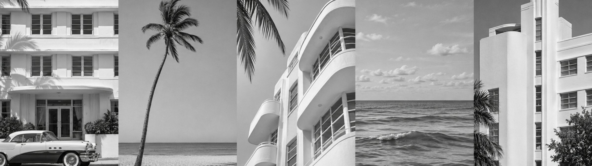
A palm, a sun, one wave
A brush-script logotype with a single emblem tucked between the words: a palm against a half sun, carried on a wave that runs into the letters. It is drawn on a strict grid so the loose script still sits true.
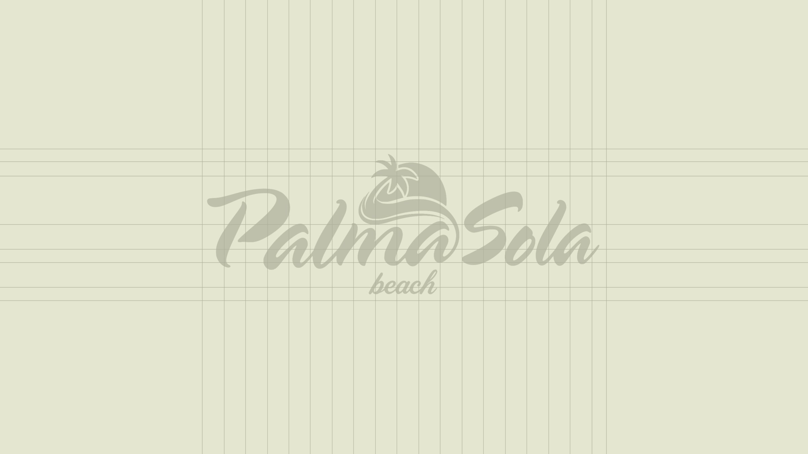
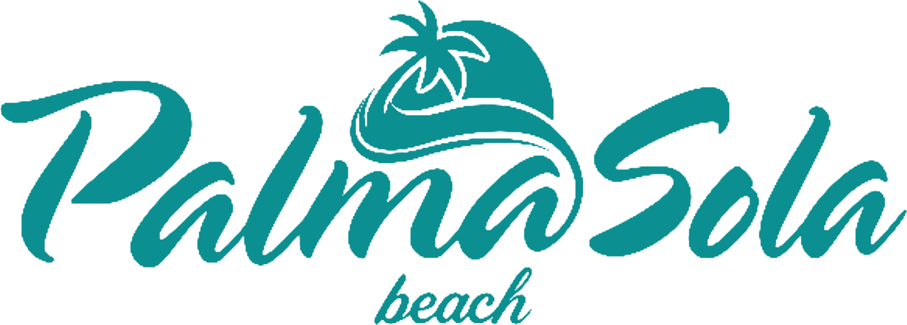
PrimaryLagoon on sand
ReverseSand on lagoonPalm shadow, noon to dusk
The mark is always shown the way the club is felt: under moving shade. Lagoon by day, night for the evening service, and a sea-to-sand gradient for the moments in between.
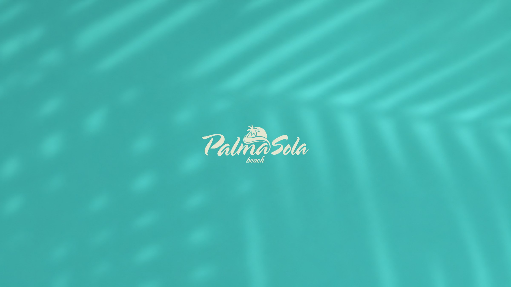
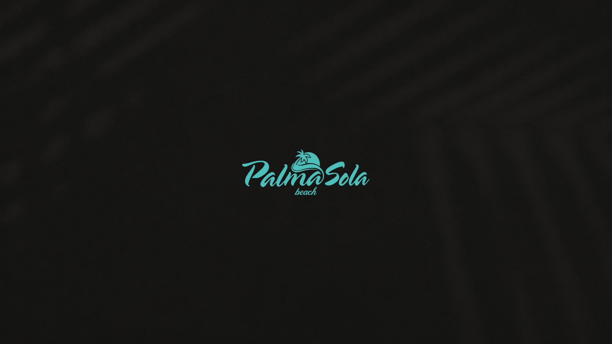
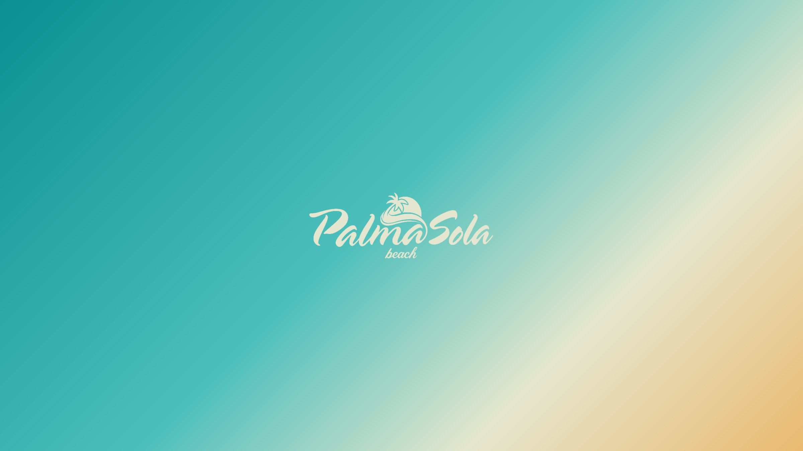
Shallow water at noon
Two lagoons for the sea, sand for the ground, a late-afternoon sun for warmth and a soft night for evenings. The gradient is the whole palette in one breath and is kept for hero moments only.
A whisper and a breath
Cormorant Garamond in italic carries the feeling; Raleway Light, widely tracked in capitals, carries the facts. Set together they become the brand's line: SEA breeze SLOW days.
Drawn with one line
A small set of hairline marks taken from the emblem: the wave, the sun, the palm. They sign off posts, punctuate menus and sit quietly in the corner of a card.
Paper you want to keep
Heavy cotton card in sand and deep lagoon, the logo blind-tinted on one side and Guest Relations set in the italic on the other.
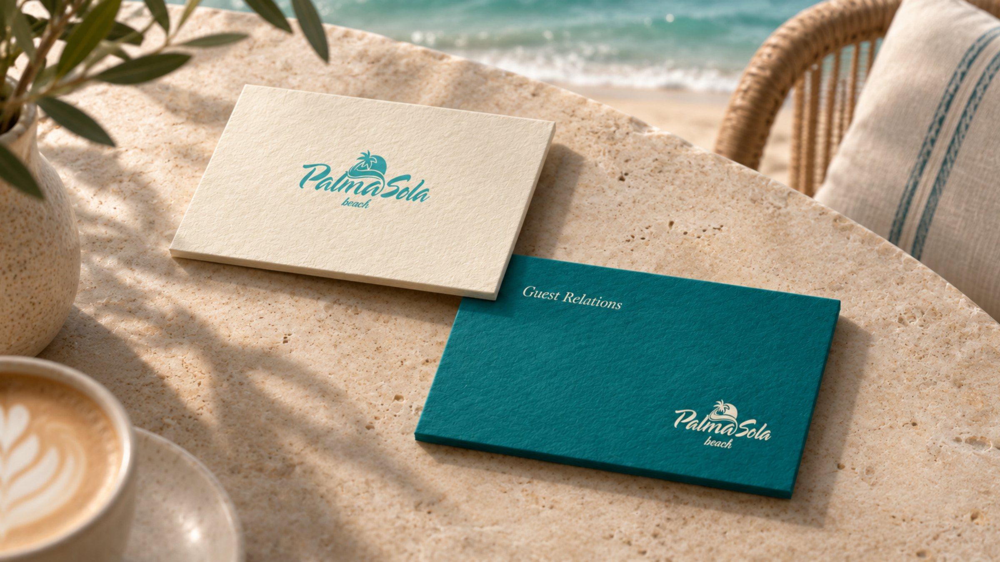
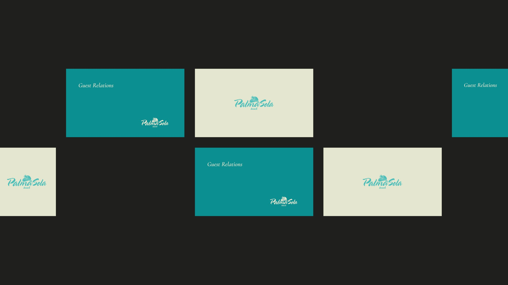
Caught doing nothing
Natural light, linen, rattan and real laughter. Photographs alternate with flat colour and the mark, so the grid breathes like the place.
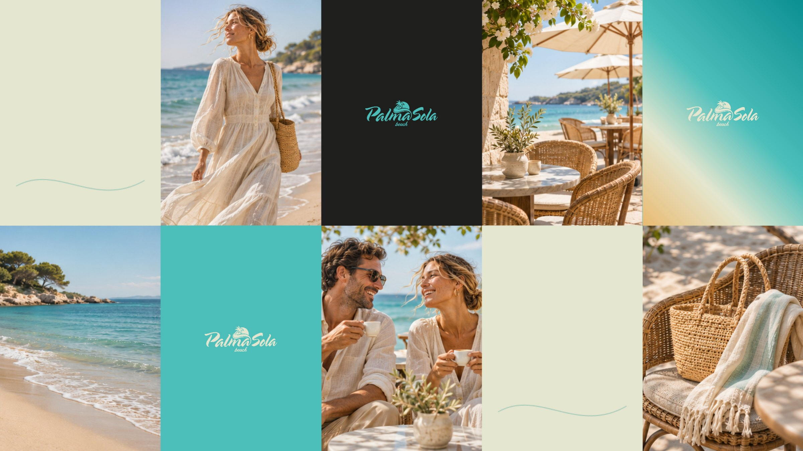
An arch-shaped window
Every post looks through the same soft arch, the shape of the sun in the emblem. Type posts use the brand line on the gradient; stories rotate the system across lagoon, sand and sun.
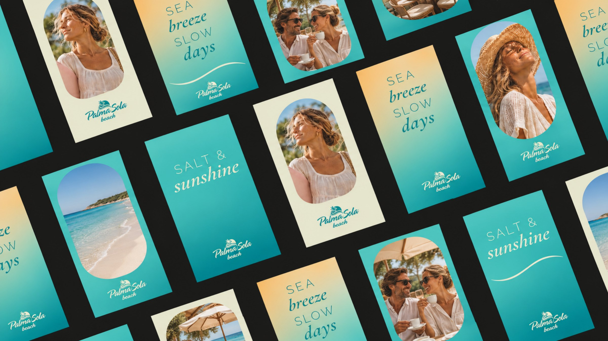
Take the shade home
Gift boxes in night and lagoon with a palm-shadow emboss, and shopping bags in sand and black with lagoon rope handles.
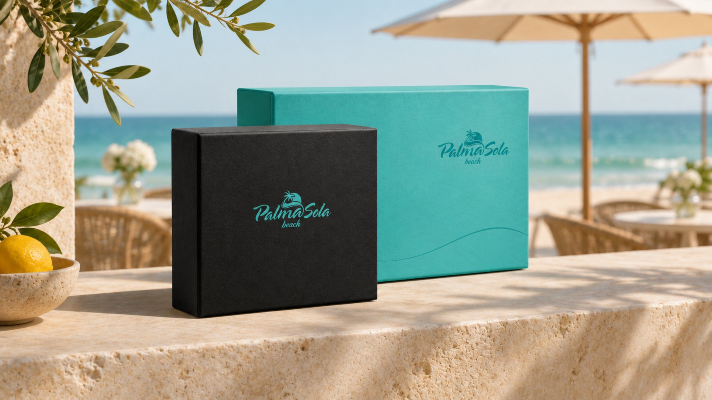
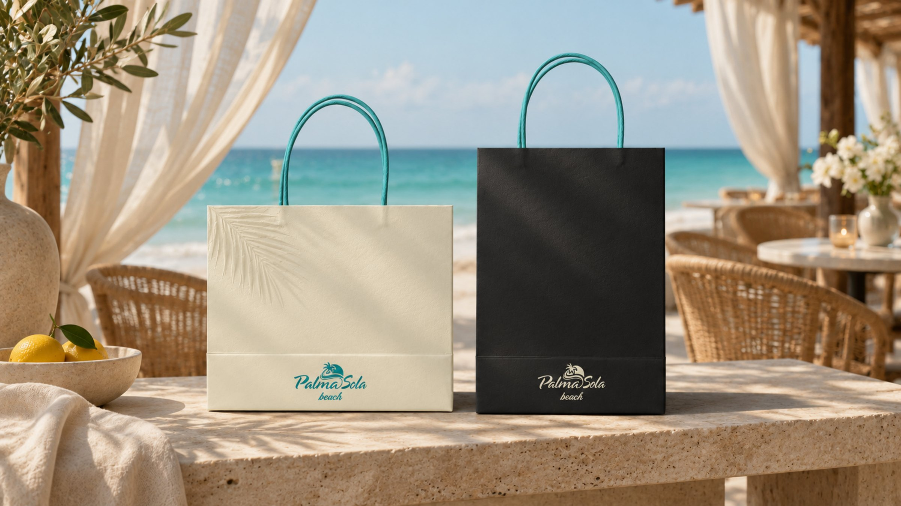
On the terrace wall
The poster system in place: logo on night, an arch of real life and the line along the foot, in a sun-warmed limestone café.
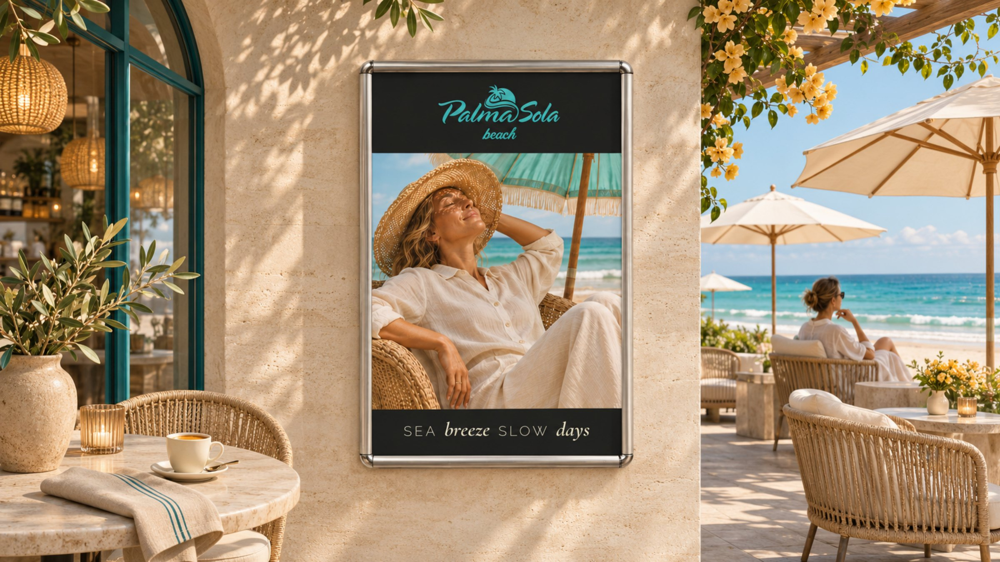
Until next time.
A brand that asks nothing of its guests: a palm, a sun, one wave, and the quiet promise of a slow day by the sea.